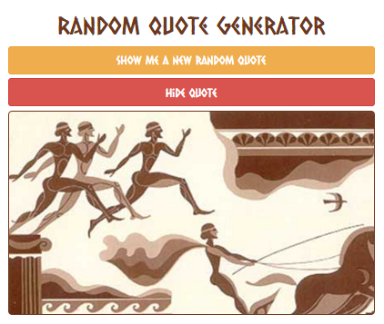
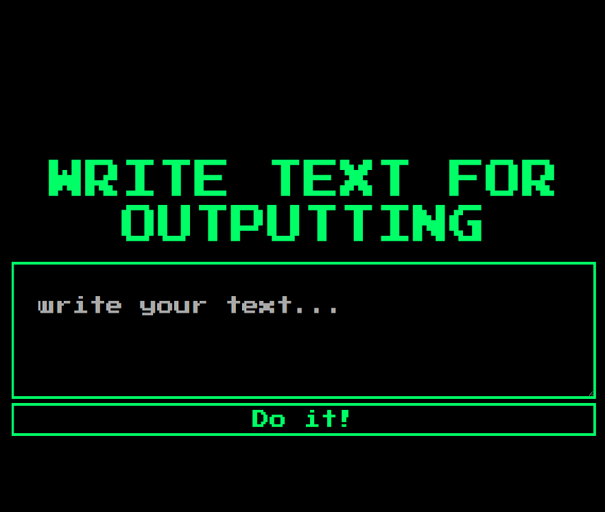
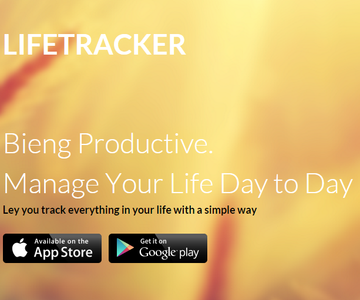
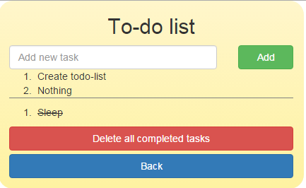

Решение задачи для freecodecamp.com. При нажатии на кнопку выводит случайную фразу из заданного массива.
Скрипт для посимвлольного вывода строки с возможностью регулирования интервала вывода.
Верстка одностраничного сайта-портфолио для дизайнера.

Верстка одностраничного сайта абстрактного мобильного приложения.
Определяет и выводит погоду для вашего текущего местоположения, используя открытый API.

Простой список дел или список задач. «Список дел» позволит вам эффективно организовать свое рабочее время.
